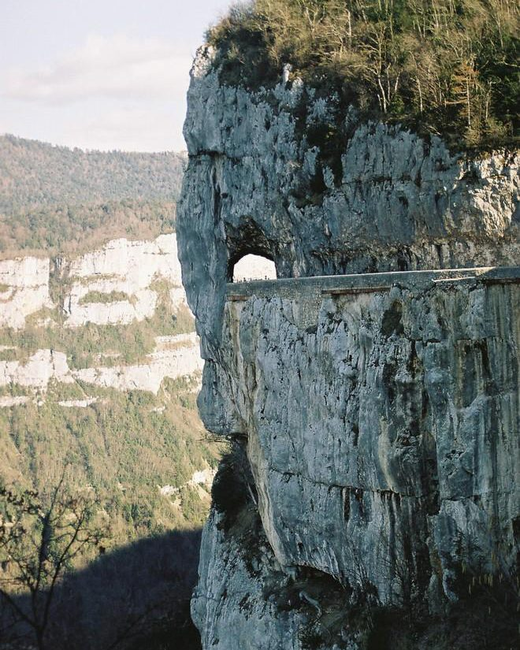

About 1h15 from Les Cabritas, the Drôme side of the Vercors massif reveals a very different landscape: sheer cliffs, historic roads cut into the rock, and places steeped in memory, particularly around Vassieux-en-Vercors.

The Grands Goulets, a road carved into the cliff
The old Grands Goulets road was opened in 1851 after eight years of work considered a remarkable feat for its time. The picturesque hamlet of Les Barraques was built to house the workers during construction. Since a new tunnel opened in 2008, the "historic" road has been closed to traffic but remains striking to explore on foot in places, deep within a dramatic gorge.
Vassieux-en-Vercors, a place steeped in memory
The Mémorial du Vercors, located at the Col de la Chau, overlooks the Vassieux plain from the cliffs, offering a view over the whole massif and the very sites of the 1944 Resistance fighting. The departmental Resistance museum, founded by former resistance fighter Joseph La Picirella, completes the visit and helps visitors better understand the tragic events that marked the village during the Second World War.
Good to know before you visit
The winding mountain road calls for careful driving; allow extra time if you're prone to motion sickness. The climate here is cooler than down in the valley, even in summer, so bring a light jumper. Allow a full day to combine a hike, a visit to the Grands Goulets and a stop at the museum.
Practical info from Les Cabritas
- Distance from Flaviac: about 1h15 to 1h30 by car
- Best time to go: May to September
- Great for: hiking, history, wide open spaces
Fancy discovering the Vercors drômois and the Grands Goulets from your cottage in Ardèche?
Les Cabritas welcomes you in Flaviac, at the heart of Ardèche, for a comfortable stay with a private pool, just a stone's throw from the region's most beautiful sites.
Check availability